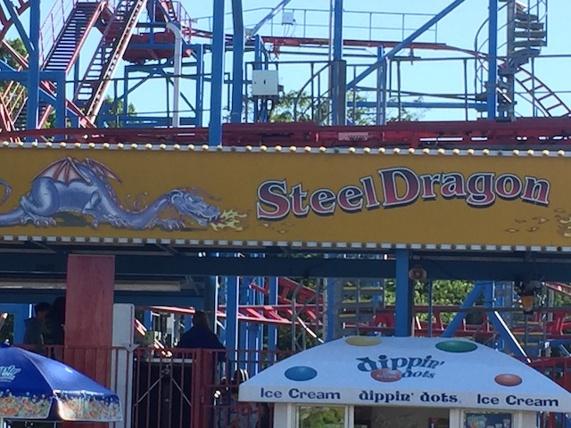
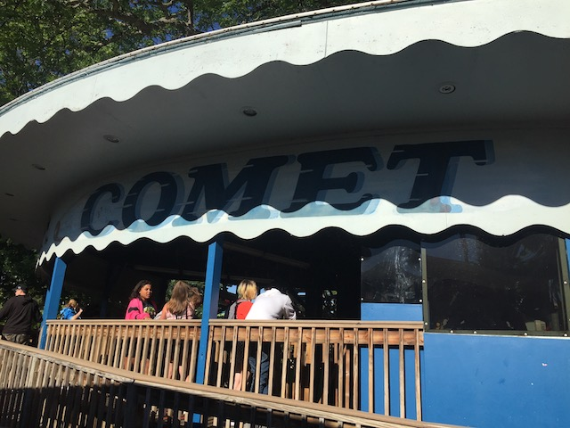
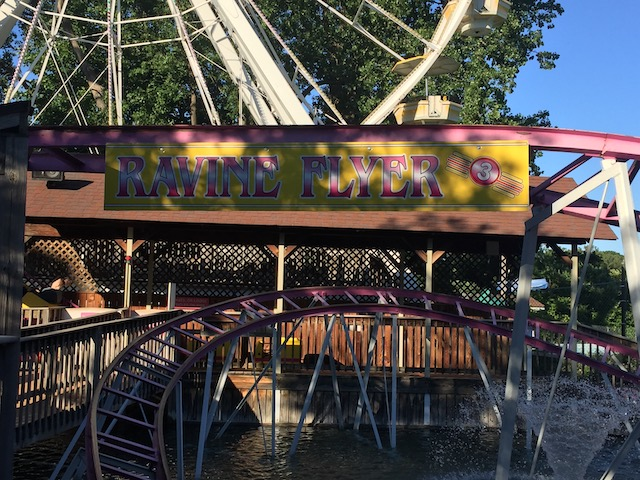
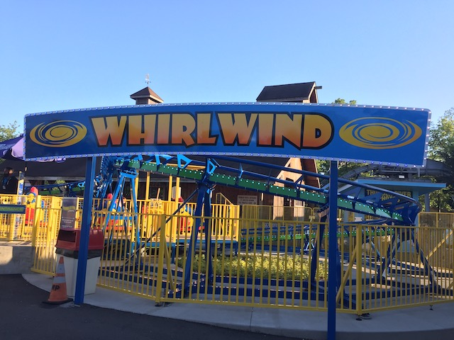
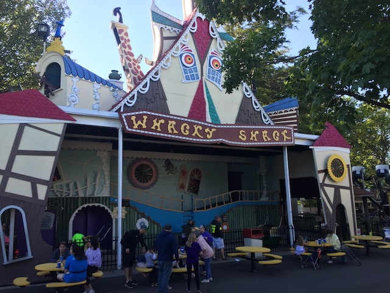
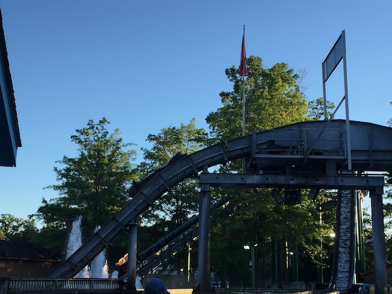
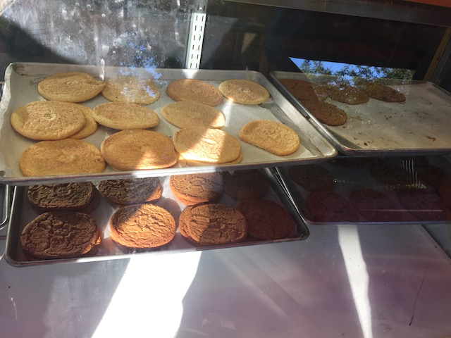

| |
Waldameer Review

Waldameer is a small little amusement park that for a very long time, was just a place for locals as well as a credit whoring stop. However, a little over a decade ago, Waldameer really put itself on the map when they added Ravine Flyer II. OK. I don't know if put themselves on the map is the right word since....there are far more popular amusement parks with enthusiasts. But it DEFINATELY got a huge boost in attendance with coaster enthusiasts when Ravine Flyer II was built since....that's a REALLY GREAT wooden coaster. And while Waldameer is getting more attention, it's still a small amusement park and it's pretty clear that if Ravine Flyer II was built at a major theme park, it'd get even more love than it already does. But on top of that, the rest of Waldameer is a really fun amusement park. OK. I'm not gonna lie. The rest of the amusement park is....pretty standard, with not a whole lot that makes it stand out. But at the same time, it's just a really mellow relaxed old school amusement park. The type of park that you'd just take it easy at and enjoy all the old school classic attractions along with some mellow old school coasters. Cause....yeah. The coasters here outside of Ravine Flyer II are....not the best. But you just enjoy all the old school flat rides that are really running some of the best programs. And of course, there's a handful of wacky old school flat rides. Yeah. Some might call this a generic amusement park aside from Ravine Flyer II, and...yeah. It kind of is. But at the same time, it's just a ton of fun. Check out the rest of the review and see all that Waldameer has to offer.
Rollercoasters
There is a link to a review of all the Rollercoasters at Waldameer.
Top Coasters
Ravine Flyer II Review

Fun Coasters
Steel Dragon Review

Kiddy Coasters
Comet Review

Ravine Flyer 3 Review

Whirlwind Review

Flat Rides
Here are the reviews of all the Flat Rides at Funtown Splashtown U.S.A. Now since this is a small park, this isn't the kind of place where you see amazing flat rides all over the place And yeah. Most of the flat rides here are pretty generic for the most part. But they run them all at their highest settings and just do a fantastic job with the programs. Honestly, my favorite flat ride would be X-Scream, which is the parks Shock Drop. These rides are just a ton of fun. You never know when you're going to reach the top. You just keep climbing and then all of a sudden.....BAM!!! Drop down to the ground. No matter how many times I ride them, these still always manage to catch me off guard. While at Waldameer, I also managed to ride their falling star, which the more time goes by, the more these rides become special and unique rides. So yeah. I DEFINATELY recommend riding that if you're at Waldameer and don't live by one of the few parks that still has a Falling Star. They also have a tilt a whirl that really spins a lot, as well as a wipeout, a spider, and a ferris wheel. They also have a Spin Party 360 (this must be new as I for sure would've ridden it had I seen it when I was there), as well as a Disk-O, a music express, a pirate ship, a scrambler, some chairswings, a paratrooper, a merry go round, and several kiddy flat rides.
Dark Rides
All right. Now we're checking out the dark rides of Waldameer. None of the dark rides here are really notable. But there are a couple of fairly unique dark rides that give Waldameer its classic old school amusement park feel. And that ride would undoubtedly be Wacky Shack. This is a VERY old school dark ride. It sort of acts like most old school dark rides. It has a lot of moments that just make it essentially a nicer version of all the crappy dark rides that litter county fairs across the country. It also has a lot in common with cheesy horror rides that other old school theme parks, such as Terror Ride & Dracula's Castle @ Lagoon and Haunted Mansion @ Knoebels. Yeah. Despite the name, this is essentially a cheesy horror dark ride. Also, a few people count it as a credit because it has a tiny drop at one point. Those people are sad, pathetic, desperate, and objectively wrong. They also have a sort of mirror maze here called Pirate's Cove. It seems really fun. However, my ride was ruined by some little brats being incredibly obnoxious and in desperate need of adult supervision. Would love to do it again next time and have a better brat-free time in there.

Fun old school dark ride with some cheesy horror fun.
Water Rides
Here are the reviews of all the water rides at Waldameer. They only have one water ride here, and we rode it. Their log flume, Thunder River. This is not anything special. For the most part, it's just a standard log flume. If I had to say anything about this log flume, it would be that it's a little clunky and awkward. You know that awkward log flume at Kings Island in the kiddy area, "Race for Your Life, Charlie Brown"? This is kind of like a bigger version of that in that one of the drops is....kind of clunky in a similar way. So that's amusing. And the ride does get you wet. So on a hot day, riding Thunder River will get the job done. It may not be the best log flume, but it's fun.

Awkward, but still fun and refreshing.
Water Park
Yes. Waldameer also has a water park that is incuded with admission. I never went inside. And to be fair, nothing about this water park really stands out. It seems pretty generic as far as I can tell. But hey. They appear to have a Water Coaster. That's cool.
Dining
While I never ate a full proper meal at Waldameer, I did technically have one thing at the park. One of the cookies from Cookie House. And these were pretty good. Freshly made and relatively big. Thumbs up from me. Everything else seems good, but fairly standard. So yeah. Nothing stands out in the dining department at Waldameer.

Very good cookies.
Theming and Other Attractions
Here are the reviews of all the other stuff at Waldameer. As far as theming goes, there's NOTHING!!! The most you'll get is the extremely corny horror theming that's part of Wacky Shack. Aside from that, this is a straight up amusement park. Not even Golf'N'Stuff style theming that you could build in RCT. But hey.I will give it this. It was a WONDERFUL setting right by Lake Erie. It's a very nice location. Honestly, this is a runner up in our Top 10 Park Settings List. As far as other things to do at Waldameer, there's not a whole lot that stands out. Just some standard arcade games and midway games. They're fun. But they're stuff that can be found at nearly any amusement park.
 This setting right by Lake Erie genuinely is extremely nice.
This setting right by Lake Erie genuinely is extremely nice.
In Conclusion
Waldameer is a very fun park. For the most part, it doesn't seem like anything special on paper. Yes. It is true that it has a truly fantastic wooden coaster in Ravine Flyer II. However, the rest of the park is also just a ton of fun. Sure, nothing else about the park really stands out aside from their star attraction. But hey. Everything else is just a ton of fun. The rides that they do have are all run at their full potential. Sure, it may not have the same charm as Knoebels, another old school park in Pennsylvania. But this is just a really cool, chilled, and laid back park that they have. I had a blast here, and I really hope to come back here sometime as it's a really fun amusement park.
Enthusiast FAQs.
*Are there kiddy coaster restrictions? - No. You can ride Comet, Ravine Flyer 3, and Whirlwind all without a kid.

Tips
*Get lots of rides on Ravine Flyer II.
*Don't treat Waldameer like a credit whoring stop.
*Wacky Shack is deceptively a lot of fun.
*Have Fun!!!
Theme Park Category:
Small Park
Location
Erie, Pennsylvania, USA
Last Day Visited
June 22, 2021
Video
I did not shoot enough video to make a Waldameer video
Complete Update List
2021
East Coast Trip 2021
Here's a link to the parks website.
Home
|